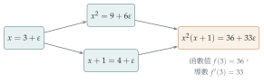

STEP II 1992，第 4 題
繼續之前，請先閱讀題目（原題為英文）。題目載於 STEP Support Programme 的題目資料庫： step.maths.org/questions/92-s2-q4
引子
甚麼是微分法（differentiation）？在中學，它是用極限（limit）\(\lim_{h \to 0}\frac{f(x+h) - f(x)}{h}\) 來定義的，然後你再學各種法則：和的導數（derivative）等於導數的和、積法則（product rule），諸如此類。這道題把整件事倒轉過來。請把極限完全拋開。假設你對某個運算所知的，就只有它符合和法則、積法則和常數的法則，並且把 \(x\) 變成 \(1\)。題目要證明的是：這樣的運算必定就是微分，至少對多項式（polynomial）而言是如此。
這是代數學家看微積分的角度：一個運算的特徵在於它所遵從的法則，而不在於某條公式。遵從積法則的運算稱為導子（derivation），它們在代數、幾何和物理中隨處可見。出人意料的是，訓練現代機器學習系統的軟件，內裏用的也是同一個想法。
動筆之前
法則 (i) 就是積法則。積法則怎可能告訴你關於常數的任何事情？（試把常數看成一個乘積。）
數 \(1\) 等於 \(1 \times 1\)。把積法則應用於 \(1 \times 1\)，便得出 \(\lozenge 1\) 與它自身之間的一個關係，從而迫使它等於零。一般而言，處理這類公理（axiom）的竅門，是把它們應用於精心挑選的簡單輸入。
逐步解題
階段 1 常數
取 \(\mathrm{f} = \mathrm{g} = 1\)，應用法則 (i)。然後用法則 (iv) 處理其他任何常數。
\(\lozenge 1 = \lozenge(1 \cdot 1) = 1 \cdot \lozenge 1 + 1 \cdot \lozenge 1 = 2\lozenge 1\)，所以 \(\lozenge 1 = 0\)。對任意常數 \(\lambda\)，由法則 (iv) 得 \(\lozenge\lambda = \lozenge(\lambda \cdot 1) = \lambda\lozenge 1 = 0\)。■
階段 2 冪
利用法則 (iii)，\(\lozenge x^2 = \lozenge(x \cdot x) = x\lozenge x + x\lozenge x = 2x\)。於是 \[\lozenge x^3 = \lozenge(x^2 \cdot x) = x\lozenge x^2 + x^2\lozenge x = x \cdot 2x + x^2 = 3x^2.\]
用歸納法（induction）證明：對每個正整數 \(n\)，均有 \(\lozenge x^n = nx^{n-1}\)。
\(n = 1\) 的情況就是法則 (iii)。若 \(\lozenge x^n = nx^{n-1}\)，則 \[\lozenge x^{n+1} = \lozenge(x^n \cdot x) = x\lozenge x^n + x^n\lozenge x = x \cdot nx^{n-1} + x^n = (n + 1)x^n. \qed\]
階段 3 所有多項式
一般的多項式是 \(\mathrm{h}(x) = a_0 + a_1x + \cdots + a_mx^m\)。由法則 (ii)（重複應用）和法則 (iv)， \[\begin{aligned} \lozenge\mathrm{h}(x) &= \lozenge a_0 + a_1\lozenge x + a_2\lozenge x^2 + \cdots + a_m\lozenge x^m \\ &= a_1 + 2a_2x + \cdots + ma_mx^{m-1} = \mathrm{h}'(x). \qed \end{aligned}\]
回顧
公理決定運算。四條法則，完全沒有提及極限，就把 \(\lozenge\) 在多項式上的作用完全確定下來。
生成元（generator）。每個多項式都是由常數和 \(x\) 經加法和乘法構造出來的。只要知道 \(\lozenge\) 對這些基本構件的作用，以及它與這些構造運算如何互動，就能確定它在所有多項式上的作用。
沿着構造過程作歸納。證明的步驟緊隨多項式的構造方式：先以重複相乘得出冪，然後再求和。
背後的數學
在一個代數系統上，若運算 \(D\) 具有可加性（additive），並且滿足積法則 \(D(fg) = fD(g) + gD(f)\)，便稱為導子。這道題說明，在多項式上，一個把常數變成零的導子完全由 \(D(x)\) 決定：事實上 \(D(h) = h'(x)\,D(x)\)，所以唯一的自由度就是多項式 \(D(x)\) 的選擇。法則 (iii) 規定了 \(D(x) = 1\)。導子遍佈數學各個領域：在幾何中，曲面上的向量場（vector field）可以定義為該曲面上的函數的一個導子（它沿着向量場的方向對函數求導）；在代數中，一個結構的導子量度它的「無窮小對稱」（infinitesimal symmetries）；在物理中，量子力學的交換子（commutator）\([A, B] = AB - BA\) 對每個變元而言都是一個導子。
沒有極限的微積分
在極限完全沒有意義的場合，代數式的導數依然行得通。在有限域（finite field）上，例如模質數 \(p\) 的算術，並沒有極限可言，但多項式的形式導數（formal derivative）仍由同樣的法則定義，而且仍然能夠偵測重根（repeated root）：多項式 \(f\) 有重根，當且僅當 \(f\) 與 \(f'\) 有公因式。舉例說，我們就是這樣證明當 \(p \nmid n\) 時 \(x^n - 1\) 沒有重根的；要在有限域上定義 第 6.1 節 的分圓多項式（cyclotomic polynomial），就需要這個事實。編碼理論和密碼學也用到同樣的想法。
自動微分
以下是一個現代應用。創造一個數 \(\varepsilon\)，使得 \(\varepsilon^2 = 0\) 但 \(\varepsilon \neq 0\)，然後用對偶數（dual number）\(a + b\varepsilon\) 來做算術。這時 \((a + b\varepsilon)(c + d\varepsilon) = ac + (ad + bc)\varepsilon\)：\(\varepsilon\) 的部分恰好遵從積法則。因此對任何多項式， \[f(x + \varepsilon) = f(x) + f'(x)\,\varepsilon,\] 而在對偶數 \(x + \varepsilon\) 處計算 \(f\)，就能同時求出函數值和導數，結果完全準確，既不用極限，也沒有因微小差值而產生的捨入誤差（圖 6.5.1）。這稱為前向模式自動微分（forward-mode automatic differentiation）。它的近親「反向模式」（reverse mode），就是用來訓練擁有數十億個參數的神經網絡（neural network）的算法（反向傳播，backpropagation）：這類系統每學習一次，都是在把積法則和鏈式法則（chain rule）當作導子，一步一步地應用。

思維技巧
用一個運算所遵從的法則來描述它，然後證明這些法則唯一地確定了它。
這就是公理化方法（axiomatic method），是大學代數的核心。它的威力在於：凡是由公理證明出來的結果，都適用於每一個滿足這些公理的運算，不論那是多項式的微分、曲面上函數的微分，還是某種尚未發明的東西。
延伸練習
另一個導子。假設 \(\lozenge\) 滿足法則 (i)、(ii) 和 (iv)，但 \(\lozenge x = x\) 而不是 \(1\)。證明 \(\lozenge\mathrm{h}(x) = x\,\mathrm{h}'(x)\)。\(\lozenge\) 會把 \(x^n\) 變成甚麼？
商法則（quotient rule）。把 \(\lozenge\) 推廣到有理函數（rational function）\(\mathrm{f}/\mathrm{g}\)，並假設法則 (i) 仍然成立。把法則 (i) 應用於 \(\mathrm{g} \cdot \frac{\mathrm{f}}{\mathrm{g}} = \mathrm{f}\)，從而推導出商法則。
重根。證明若 \((x - a)^2\) 整除多項式 \(\mathrm{f}\)，則 \(x - a\) 整除 \(\mathrm{f}'\)。利用這個結果證明 \(x^n - 1\) 沒有重根。
對偶數。設 \(f(x) = (x^2 + 1)^3\)，用對偶數計算 \(f(2)\) 和 \(f'(2)\)，並用鏈式法則驗算。
延伸閱讀
Peter Cameron, Introduction to Algebra（Oxford University Press）。大學一年級程度的環、多項式和域，並包括形式導數。
Andreas Griewank & Andrea Walther, Evaluating Derivatives（SIAM）。自動微分的標準參考書。程度較深。
Michael Nielsen, Neural Networks and Deep Learning（網上免費閱讀）。第 2 章清楚講解反向傳播。